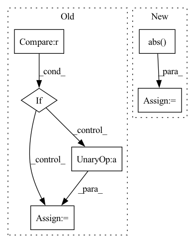

Pattern ID :28258
Before Change
loss = params.compute_cost(predictions, target_wavs, lens)
stats = {}
if stage != "train" :
lens = lens * target_wavs.shape[1]
pesq_scores = multiprocess_evaluation(
predictions.cpu().numpy(),
target_wavs.cpu().numpy(),
lens.cpu().numpy(),
)
stats["pesq"] = pesq_scores
stats["stoi"] = -stoi_loss(predictions, target_wavs, lens)
if stage == "test":
// Write wavs to file
After Change
enhance_path = os.path.join(
self.hparams.enhanced_folder, name
)
pred_wav = pred_wav / torch.max(torch.abs( pred_wav) ) * 0.99
torchaudio.save(
enhance_path, pred_wav[: int(length)].cpu(), 16000
)
In pattern: SUPERPATTERN
Frequency: 3
Non-data size: 6
Instances Fragment ID: 83529658
Project Name: speechbrain/speechbrain
Commit Name: 12938c3385685062c6f084d917abef54fac489a3
Time: 2020-10-26
Author: weisberger2009@gmail.com
File Name: recipes/Voicebank/enhance/waveform_map/experiment.py
M Class Name: SEBrain
N Class Name: SEBrain
M Method Name: compute_objectives(4)
N Method Name: compute_objectives(4)
M Parent Class: sb.Brain
N Parent Class: sb.core.Brain
M File Name: recipes/Voicebank/enhance/waveform_map/experiment.py
N File Name: recipes/Voicebank/enhance/waveform_map/experiment.py
M Start Line: 70
M End Line: 95
N Start Line: 24
N End Line: 54
Before Change
zero_point = round(-x_min / delta)
// re-calculate the scale delta if zero-point is not 0,
if zero_point != 0 :
delta = -x_min / zero_point
// convert delta to tensor for further optimization
delta = torch.tensor(delta).type_as(x)
elif self.scale_method == "mse":After Change
elif self.scale_method == "mse":
// we always use symmetric quantization in mse mode
x_absmax = x.abs() .max()
best_score = 1000
for i in range(80):
new_max = x_absmax * (1.0 - (i * 0.01)) Fragment ID: 83529672
Project Name: yhhhli/brecq
Commit Name: 889d90425364ace36bcc549d7298d1e073f865c0
Time: 2021-02-18
Author: loafyuhang@gmail.com
File Name: quant/quant_layer.py
M Class Name: UniformAffineQuantizer
N Class Name: UniformAffineQuantizer
M Method Name: init_quantization_scale(3)
N Method Name: init_quantization_scale(3)
M Parent Class: nn.Module
N Parent Class: nn.Module
M File Name: quant/quant_layer.py
N File Name: quant/quant_layer.py
M Start Line: 97
M End Line: 128
N Start Line: 114
N End Line: 125
Before Change
X_stft_logpower = torch.log(X_stft_power + 1).transpose(1, 2)
// Concatenate labels (due to data augmentation)
if stage == sb.Stage.TRAIN and False:
classid = torch.cat([classid] * self.n_augment, dim=0)
elif stage == sb.Stage.VALID:
self.top_3_fidelity.append(
batch.id, theta_out, classification_outAfter Change
loss_nmf = ((reconstructions - X_stft_logpower) ** 2).mean()
// loss_nmf = loss_nmf / reconstructions.shape[0] // avg on batches
loss_nmf = self.hparams.alpha * loss_nmf
loss_nmf += self.hparams.beta * (time_activations).abs() .mean()
if stage != sb.Stage.TEST:
if hasattr(self.hparams.lr_annealing, "on_batch_end"): Fragment ID: 83529646
Project Name: speechbrain/speechbrain
Commit Name: 47b398ed56590c2b0cf2a201bce09fdb7b6b5aa4
Time: 2022-11-25
Author: me@francescopaissan.it
File Name: recipes/ESC50/classification/train_l2i.py
M Class Name: InterpreterESC50Brain
N Class Name: InterpreterESC50Brain
M Method Name: compute_objectives(4)
N Method Name: compute_objectives(4)
M Parent Class: sb.core.Brain
N Parent Class: sb.core.Brain
M File Name: recipes/ESC50/classification/train_l2i.py
N File Name: recipes/ESC50/classification/train_l2i.py
M Start Line: 295
M End Line: 304
N Start Line: 266
N End Line: 280